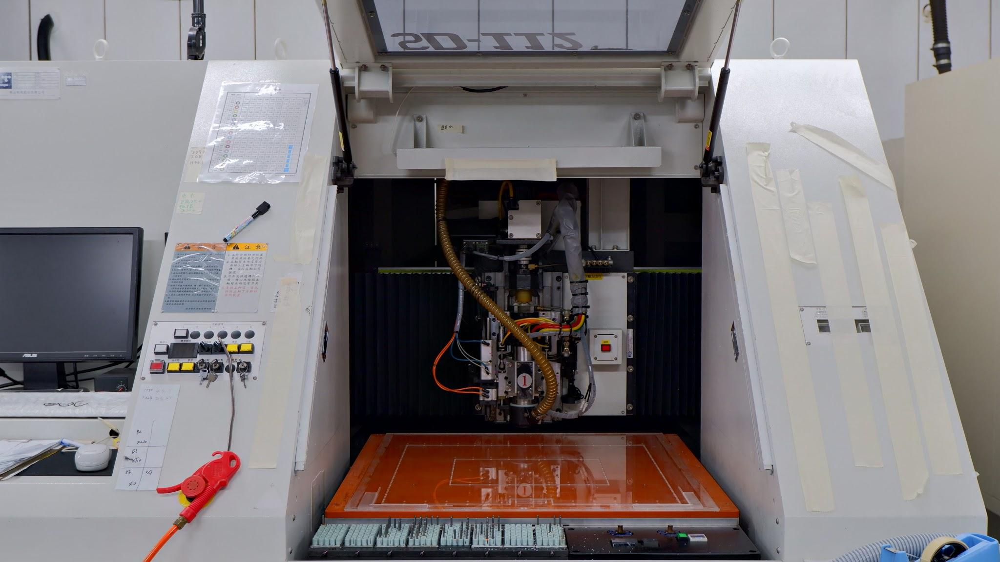

卓越精密，光學領航
累積 30 年工藝經驗，提供電視光學級導光板與高精度 CNC 加工方案
我們的核心優勢
為什麼知名品牌大廠選擇與機零壹合作？
精密加工技術
採用工業 4.0 標準的自動化 CNC 設備，加工公差精確控制在微米級別，確保每一件產品的物理性能均符合最嚴苛的工業規格。
光學材料深耕
專注於 PMMA (壓克力)、PC 等光學級材料的特性研究。透過獨特的拋光與切割工藝，大幅提升材料的透光率與光學品質。
一站式整合服務
從材料採購、精密切割、鑽孔加工到最終品質檢測與精密包裝。我們的一條龍服務能縮短交期，並降低客戶的溝通與運輸成本。

頂尖加工工藝
機零壹科技長期擔任電視導光板代工夥伴。我們深知光學組件對於平整度與潔淨度的極高要求。我們的生產線完全符合電子產業的嚴格環境標準。
我們採用的 CNC 製程具備以下特色：
- 無毛邊處理：物理性微切割技術，確保邊緣平滑不傷手。
- 高平整度：確保大尺寸導光板在組裝時不發生形變。
- 快速打樣：具備靈活的樣品試製能力，協助客戶加速研發。
30+
行業經驗 (年)
ISO
9001:2015 認證
100%
台灣在地生產
專業生產設備

